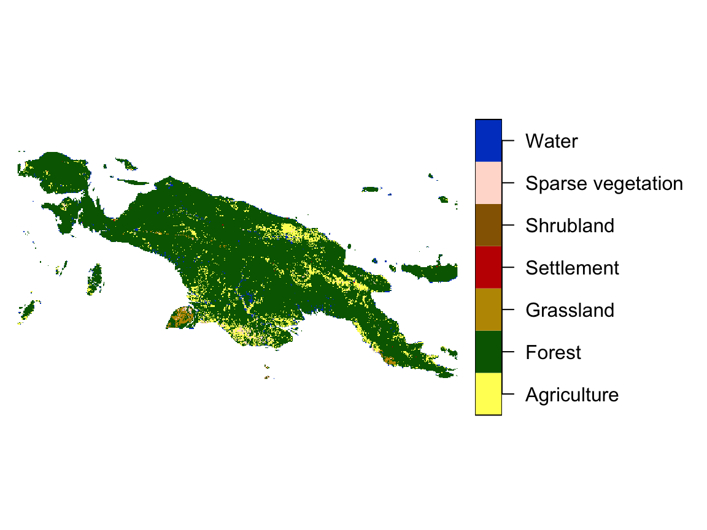
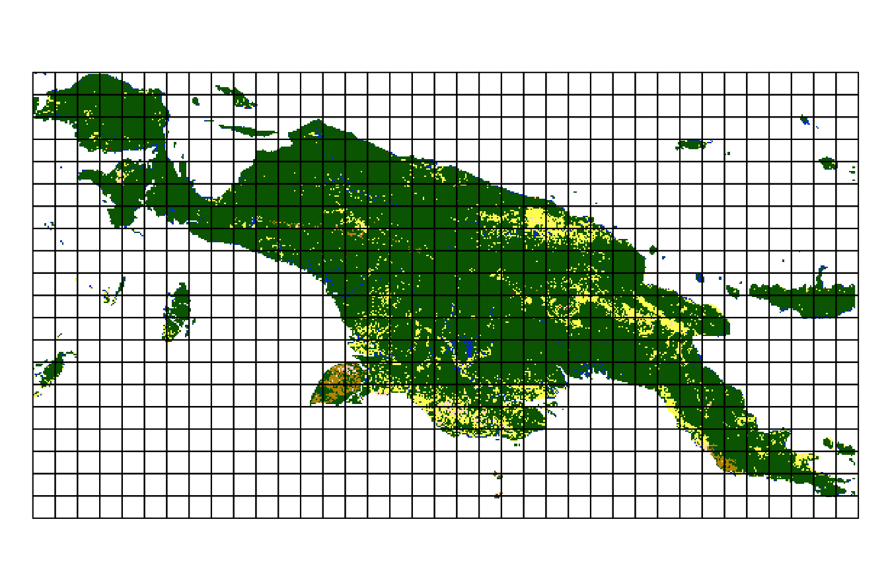

The motif package implements ideas of the pattern-based spatial analysis in R. Its role is to describe spatial patterns of categorical raster data for any defined regular and irregular areas. Patterns are represented quantitatively using built-in signatures based on co-occurrence matrices but also allows for any user-defined functions. It also enables spatial analysis such as search, change detection, and clustering to be performed on spatial patterns.
The motif package works on raster data represented by stars objects. It has several example datasets, including "raster/landcover2015.tif". This file contains a land cover data for New Guinea, with seven possible categories: (1) agriculture, (2) forest, (3) grassland, (5) settlement, (6) shrubland, (7) sparse vegetation, and (9) water.
library(motif) library(stars) #> Loading required package: abind #> Loading required package: sf #> Linking to GEOS 3.8.1, GDAL 2.4.4, PROJ 7.0.0 library(sf) landcover = read_stars(system.file("raster/landcover2015.tif", package = "motif"))

Signatures
Whole area
We can see that most of the island is covered by forest, with some agriculture and smaller areas of the other classes. It is also reasonably easy to describe these proportions (so-called composition) numerically - we just need to count cells of each category for the whole data.
We can use the lsp_thumbprint() function for this. It requires a stars object as the first input and the type of a signature to calculate - "composition" in this case. There are also several additional arguments, including threshold - a share (between 0 and 1) of NA cells to allow signature calculation and normalization - decision if the output vector should be normalized.
landcover_comp = lsp_thumbprint(landcover, type = "composition", threshold = 1, normalization = "none") landcover_comp #> # A tibble: 1 x 3 #> id na_prop signature #> * <int> <dbl> <list> #> 1 1 0.666 <int[,7] [1 × 7]>
The output of lsp_thumbprint(), landcover_comp, has a new class lsp. It is a tibble with three columns:
-
id- an id of each window (area) -
na_prop- share (0-1) ofNAcells for each window -
signature- a list-column containing with calculated signatures
We can take a look at the last column:
landcover_comp$signature #> [[1]] #> 1 2 3 4 5 6 7 #> [1,] 862001 8122776 84482 4311 2677 78555 203444
It is a list of signatures. In this case, we have just one signature describing the whole area in the form of a numeric vector. It contains how many cells belong to each land cover category. For example, there are 8122776 cells of forest, but only 2677 cells of shrubland.
Regular local landscapes
Another approach would be to divide this large area into many regular rectangles (we refer to them as local landscapes) and to calculate a signature in each of them. The previously used signature, "composition" has one important flaw though. It only describes how many cells of each category we have. However, it does not distinguish an area with the left half of forest and right half of agriculture from an area with forest mixed with agriculture (think of a green-yellow checkerboard). Gladly, several more types of signatures do exist. It includes a co-occurrence matrix (type = "coma"). "coma" goes to each cell, looks at its value, looks at the values of its neighbors and counts how many neighbors of each class our central cell has.

This time, we set the window argument to 200, which means that each local landscape will consist of 200 by 200 cells. In this example, each cell has a resolution of 300 by 300 meters, therefore a local landscape will be 60000 by 60000 meters (60 by 60 kilometers).
landcover_coma = lsp_thumbprint(landcover, type = "coma", window = 200) landcover_coma #> # A tibble: 232 x 3 #> id na_prop signature #> * <int> <dbl> <list> #> 1 3 0.0992 <int[,7] [7 × 7]> #> 2 4 0.145 <int[,7] [7 × 7]> #> 3 38 0.255 <int[,7] [7 × 7]> #> 4 39 0 <int[,7] [7 × 7]> #> 5 40 0 <int[,7] [7 × 7]> #> 6 41 0 <int[,7] [7 × 7]> #> 7 42 0 <int[,7] [7 × 7]> #> 8 43 0.115 <int[,7] [7 × 7]> #> 9 77 0 <int[,7] [7 × 7]> #> 10 78 0 <int[,7] [7 × 7]> #> # … with 222 more rows
Now, we have one row per local landscape, where each local landscape is described by an id (id), the proportion of cells with NAs (na_prop), and a signature (signature). For example, the first signature looks like this:
landcover_coma$signature[[1]] #> 1 2 3 4 5 6 7 #> 1 32 47 0 2 0 0 6 #> 2 47 141250 0 7 0 0 226 #> 3 0 0 0 0 0 0 0 #> 4 2 7 0 4 0 0 0 #> 5 0 0 0 0 0 0 0 #> 6 0 0 0 0 0 0 0 #> 7 6 226 0 0 0 0 1462
It is a matrix where each row and column represent subsequent land cover classes. For example, 141250 times forest cell is next to anther forest cell, and 226 times water cell is next to forest cell. You can learn more about this signature at https://nowosad.github.io/comat/articles/coma.html. Additional signatures are described in the Spatial patterns’ signatures vignette.
Irregular local landscapes
The motif package also allows using irregular regions based on the user-provided polygons. It has an example spatial vector dataset, ecoregions.gpkg, which contains terrestrial ecoregions for New Guinea from https://ecoregions2017.appspot.com/.
ecoregions = read_sf(system.file("vector/ecoregions.gpkg", package = "motif"))
This dataset has 22 rows, where each row relates to one ecoregion. Each ecoregion is also related to a unique value in the id column.

Now, we need to provide this dataset and its identity column to the window argument of lsp_thumbprint().
landcover_coma_e = lsp_thumbprint(landcover, type = "coma", window = ecoregions["id"]) landcover_coma_e #> # A tibble: 22 x 3 #> id na_prop signature #> * <int> <dbl> <list> #> 1 1 0.114 <int[,7] [7 × 7]> #> 2 2 0.0851 <int[,7] [7 × 7]> #> 3 3 0.0377 <int[,7] [7 × 7]> #> 4 4 0.0914 <int[,7] [7 × 7]> #> 5 5 0 <int[,7] [7 × 7]> #> 6 6 0 <int[,7] [7 × 7]> #> 7 7 0.00285 <int[,7] [7 × 7]> #> 8 8 0.0720 <int[,7] [7 × 7]> #> 9 9 0.0508 <int[,7] [7 × 7]> #> 10 10 0 <int[,7] [7 × 7]> #> # … with 12 more rows
The output, landcover_coma_e, is also of the lsp class and contains three columns. The first column, id, has the same values as provided in the window argument above. The third column, signature, has a spatial signature for each polygon in the ecoregions dataset.
landcover_coma_e$signature[[1]] #> 1 2 3 4 5 6 7 #> 1 662 752 0 1 0 0 13 #> 2 752 70974 0 6 0 0 427 #> 3 0 0 0 0 0 0 0 #> 4 1 6 0 12 0 0 4 #> 5 0 0 0 0 0 0 0 #> 6 0 0 0 0 0 0 0 #> 7 13 427 0 4 0 0 1560
Large data support
The motif package also supports large raster datasets, including rasters that do not fit into the RAM. It just requres reading the input data as a stars.proxy by adding proxy = TRUE to the read_stars() function:
landcover_proxy = read_stars(system.file("raster/landcover2015.tif", package = "motif"), proxy = TRUE)
The rest of the calculations are the same as above.